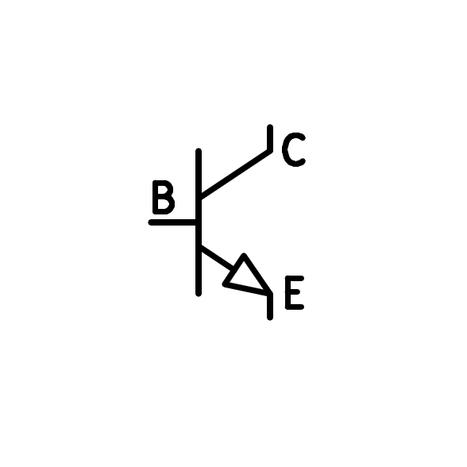
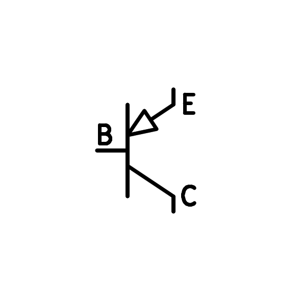

6. El transistor¶
El transistor és un dispositiu electrònic de tres terminals que permet amplificar el corrent elèctric. Disposa de diverses aplicacions que van des d’amplificadors d’àudio de fabricació, oscil·ladors de ràdio, reguladors de tensió, controladors de motors elèctrics, fonts d’alimentació, circuits digitals, microprocessadors, records, etc. El transistor forma part de pràcticament tots els circuits electrònics.
El transistor bipolar¶
És un tipus de transistor formigó basat en 3 àrees semiconductors descarregades com a positives i negatives. Per tant, hi ha dos transistors diferents, un NPN tancat i un altre anomenat PNP, segons el dopatge positiu o negatiu de les tres zones.
Els símbols dels dos transistors bipolars són els següents:
{kind=link}

Símbol transistor bipolar NPN.¶
{kind=link}

Símbol del transistor bipolar PNP.¶
El funcionament dels dos tipus de transistors és molt similar amb la diferència que el transistor PNP funciona amb corrents negatius mentre que el transistor NPN funciona amb corrents positius.
A la pràctica, el transistor NPN s’utilitza més perquè és més eficient a l’hora de conduir corrent elèctric. Per això, s’estudiarà més en profunditat. El transistor PNP es veurà més endavant en configuracions utilitzades pels dos tipus de transistors, com ara la sortida analògica en la sortida de push-pull o la sortida digital en totem-pol.
El transistor com a amplificador¶
Al circuit següent podem experimentar el funcionament d’un amplificador típic basat en transistor.
La*emitor de base ** Unió del transistor es comporta com un díode, de manera que necessita una tensió de 0,65 volts per conduir el corrent.
A la barra lateral dreta hi ha una barra corredissa que permet canviar el valor de la resistència a la polarització de la base. Aquesta resistència permet el pas d’un corrent petit. El transistor amplifica el corrent que ve per la base i permet un corrent molt més gran del col·leccionista a l’emissor, multiplicant el corrent base pel guany.
Guany del transistor¶
El corrent col·lector en un transistor típic és de 50 a 300 vegades més gran que el corrent base. Aquesta relació entre el corrent del col·leccionista i el corrent base s’anomena ** guany ** del transistor, també anomenat β o ** hfe ** paràmetre.
Per tant, la fórmula de guany del transistor serà:
On són les variables:
β = hfe = guany del transistor (nombre de dimensions)
I_colector = corrent del col·lector en amplificadors [a]
I_base = corrent base en amplificadors [a]
Nota
Els transistors de potència són transistors capaços de realitzar corrents elevats, més antics que un amperi. Aquests transistors poden tenir un guany inferior a 50 quan treballen amb grans corrents.
El mateix passa amb els transistors d’alta freqüència, que a les freqüències de treball properes al seu límit tenen un guany molt inferior al de freqüències baixes.
Exercicis¶
Dibuixa el símbol del transistor NPN i el transistor PNP i afegeix els noms de cadascun dels seus terminals.
Quina funció té un transistor bipolar?
Dibuixa un esquema elèctric d’un transistor bipolar que funciona. Afegiu els corrents i les tensions que podem trobar a cadascun dels seus tres terminals.
Comproveu que el guany del transistor simulat val 100 calculant la relació entre el corrent col·leccionista dividit pel corrent base.
Feu lliscar la barra dreta anomenada `` resistència '' i comproveu si es manté el guany per a diverses posicions.
Quan la resistència de la base deixa passar molt de corrent, arriba un moment que el transistor és ** saturA ** i no pot conduir més comú.
Aquest és un comportament típic dels circuits digitals, però intenteu evitar circuits analògics.
Canvieu la resistència de la base a un ohmios de 5k. Què és el guany del transistor? Quina tensió hi ha al col·leccionista quan el transistor està saturat ** **?